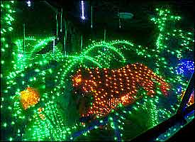

Colorful, twinkling holiday delights are found at zoos and aquariums all across the land!
Looking for a special event to celebrate this winter’s holiday season? If your family loves wild animals and Christmas lights, check out your local zoo or aquarium.
Zoos and Aquariums are lighting up in holiday celebrations all across America. A surefire way to enjoy the season and celebrate animals!
Small and large attractions alike are presenting amazing light shows. Light shows are an annual tradition in many public areas, often found at local gardens and in parks. But in more recent years they have become a seasonal highlight of zoos and aquariums as well.
These attractions offer a variety of festive activities ranging from holiday shows, ice sculptures and ice skating, strolling carolers, train rides, ice carving, cookie decorating, visits with Santa, and more. But the common element of all is the thousands upon thousands of bright and colorful lights. Beautiful animal scenes, zoo-themed scenes, and nature scenes are delightfully displayed.
Light shows at zoos and aquariums are held after dark. Consequently when the shows start the animals are mostly asleep, with the possible exception of reindeer! The air may also be a bit chilly so be sure to dress warmly. Many facilities will be open on Christmas Eve and possibly on Christmas Day, but not all, so be sure to check schedules.
Just for fun, here’s a look at some of the “greats” found across the country.
ZooLights Phoenix Zoo Phoenix, Arizona
ZooLights at the Phoenix Zoo is a magical experience illuminating the holiday season! 700 sparkling displays of nature and wildlife are all aglow with 3.8 million lights.
Meet Tortuga the Talking Galapagos Tortoise and Jengo the Talking Giraffe or take a ride on a camel. Other features include carousel and wagon rides, watching ice sculptures emerge of animals, and enjoying the Polar Express in 3-D and in a “Music in Motion” show. This event runs nightly until January 11, 2015.

WildLights Woodland Park Zoo Seattle, Washington
WildLights at Woodland Park Zoo
Photo courtesy J. Lindgren/Woodland Park Zoo
WildLights at the Woodland Park Zoo in Seattle offers an awesome Christmastime attraction!
Awash with hundreds of thousands of sparkling lights, displays feature wild animals and wild places.
Ice sculptures, carolers, live reindeer, and faux-snowball fights are just some of the attractions visitors encounter as they stroll down brightly colored paths.
This fascinating event runs until January 4, 2015, but is closed on Christmas Eve and Christmas Day.
ZooLights Point Defiance Zoo and Aquarium Tacoma, Washington
ZooLights at Point Defiance Zoo and Aquarium
Photo courtesy sheknows.com
ZooLights at Point Defiance Zoo and Aquarium offers lavish, magical wonderland displays.
Fanciful zoo themed scenes and dazzling 3-D animals are unbeatable delights, topped off with a scuba diving Santa Claus, camel and carousel rides, and of course, sipping hot chocolate.
The dazzling displays and activities continue until January 4, 2015, but they are closed on Christmas Eve and Christmas Day.
ZooLights Oakland Zoo Oakland, California
ZooLights at the Oakland Zoo is the largest LED holiday light display in the bay area of San Francisco.
Features include a light show, animal sculptures, candy cane lane holiday-themed rides, an adventurous nighttime journey on the Outback Express train, and a storybook maze for kids.
These blazing holiday lights brighten the night skies until January 4, 2015, but they are closed on Christmas Eve and Christmas Day.
ZooLights National Zoo Washington, DC
ZooLights at National Zoo
Photo courtesy Jim Jenkins
ZooLights at the National Zoo is a free holiday extravaganza.
This topnotch event brings over 100,000 zoo visitors to enjoy a thrilling display of over 500,000 lights.
They also feature train and carousel rides, Lego and train villages, snowless tubing tracks and a Gin-GRR-Bread competition.
This event runs until January 1, 2015, but they are closed on Christmas Eve and Christmas Day.
WildLights Columbus Zoo and Aquarium Powell, Ohio
WildLights at Columbus Zoo and Aquarium
Photo courtesy travelchannel.com
WildLights at the Columbus Zoo and Aquarium is truly a winter wonderland.
Named one of the Top Ten Events in North America, for 25 years this brilliant display has adorns the sky with over three million bright twinkly lights.
There are all sorts of activities including light shows and a fun ride on the Bob Evans Polar Express Train, reindeer, visits to Santa, and decorating cookies with Mrs. Claus.
This illuminated adventure land will sparkle brightly until to January 4, 2015, but they are closed on Christmas Eve.
ZooLights Houston Zoo Houston, Texas
ZooLights at the Houston Zoo illuminates the night skies with more than a million lights!
An enchanting adventure includes a completely lit-up African Forest. Though many of the animals will be tucked away in slumber, many animals in the indoor buildings and the zoo’s big cats like lions, cougars, and jaguars will be wide awake. Be sure to bring a camera as more features include a delightful dollhouse village, life-sized lighted animal sculptures, holiday trains choreographed to joyful music, larger-than-life glowing and rotating ornaments, and a walk-in snow globe.
This exciting extravaganza runs until January 4, 2015, but is closed on Christmas Eve and Christmas Day.
ZooLights Denver Zoo Denver, Colorado
ZooLights at Denver Zoo
Photo courtesy travelchannel.com
ZooLights at the Denver Zoo offers an enchanting nighttime safari across 38 acres of dazzling displays.
They feature over 150 brightly lit animal sculptures appearing in the most unexpected places. Brilliantly lit animals are seen dangling from the trees, wandering through grass lands, or leaping over bushes. A strolling along the vista brings visitors addition delights with handbell choirs and children singing holiday songs, and you can make a visit to Santa too!
This event runs until January 4, 2015. They are closed on Christmas and New Years Day however.
ZooLights Lincoln Park Zoo Chicago, Illinois
ZooLights at Lincoln Park Zoo
ZooLights at Lincoln Park Zoo is a beloved holiday wonderland of illuminated beauty.
This family-oriented extravaganza is decorated with over two million lights in trees and overhead. Featuring free crafts, train and carousel rides, ice carving, ice skating and visits from Santa, which are sure to delight adults and children alike.
This event runs nightly until January 4, 2015, though Santa heads back to the North Pole after December 23. They are also closed on Christmas Eve and Christmas Day.
WildLights Saint Louis Zoo Saint Louis, Missouri
WildLights at Saint Louis Zoo
WildLights at the Saint Louis Zoo presents an enchanting wonderland. 500,000 twinkling lights bring the zoo to life in animated displays.
Enjoy the beauty of Swan Lake, an Arctic Wonderland, and a Fantasy Butterfly Garden, and then sip on hot chocolate while listening to Storytellers spin tales around a fire.
This fun event runs until January 15, 2015, but is closed on Christmas Eve and Day as well as New Years Eve and Day.
Holiday Light Safari Alexandria Zoological Park Alexandria, Louisiana
Holiday Light Safari at Alexandria Zoo
The Holiday Trail of Lights at the Alexandria Zoological Park provides a dazzling holiday.
Go on safari through the zoo and enjoy a multitude of festive “wild animal” themed displays, all aglow in thousands of sparkling lights. Ride on the Holiday Express train, visit with Santa, decorate cookies with Mrs. Claus, and then enjoy a bonfire to round out the fun.
Celebrate at this wonderland of beauty on December 19th-23rd and 26th-28th.